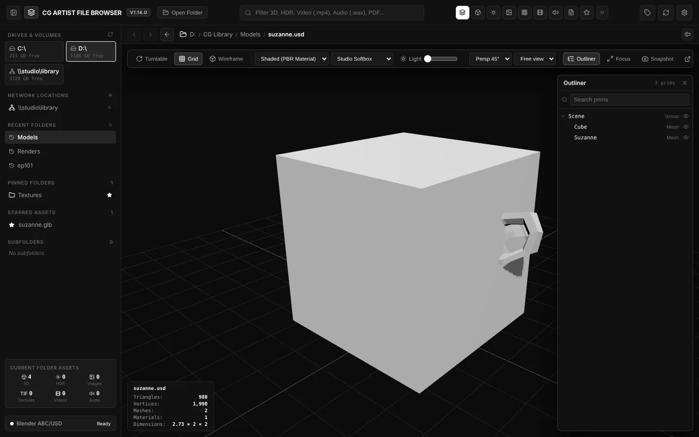

Deep dive
USD, Alembic and Blender files
How the app converts scene files with Blender, what the outliner shows, and how to set the Blender path.
How the conversion works
The app cannot read USD, Alembic (.abc) or Blender (.blend) files directly. It starts Blender in the background, without its interface, and exports a .glb copy of the scene. The copy is kept in the cache, so the second open is immediate. The sidebar footer shows Blender ABC/USD with a status: Ready when Blender is found, or a message when it is not.
Blender 4.x and 5.x are supported. Blender is found automatically in the usual install folders and Steam libraries on each drive. If it is installed somewhere else, set the path in Settings.

The outliner
The outliner is the tree of the scene. Click a line to select that part, and the viewer frames it. The search box at the top filters the names. The eye button on a row hides that part in the viewer without removing it from the tree, which helps when a scene has a cluttered background.
When a file does not open
- The status says Blender was not found: set the Blender path in Settings, then open the file again.
- The conversion fails: the message names the file. Open the same file in Blender to see whether it is a problem with the file itself.
- The model is huge: the first conversion can take a minute. Later opens use the cache.
Found a mistake or something missing? Edit this page on GitHub.